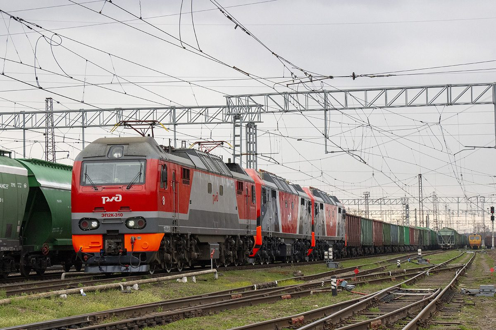
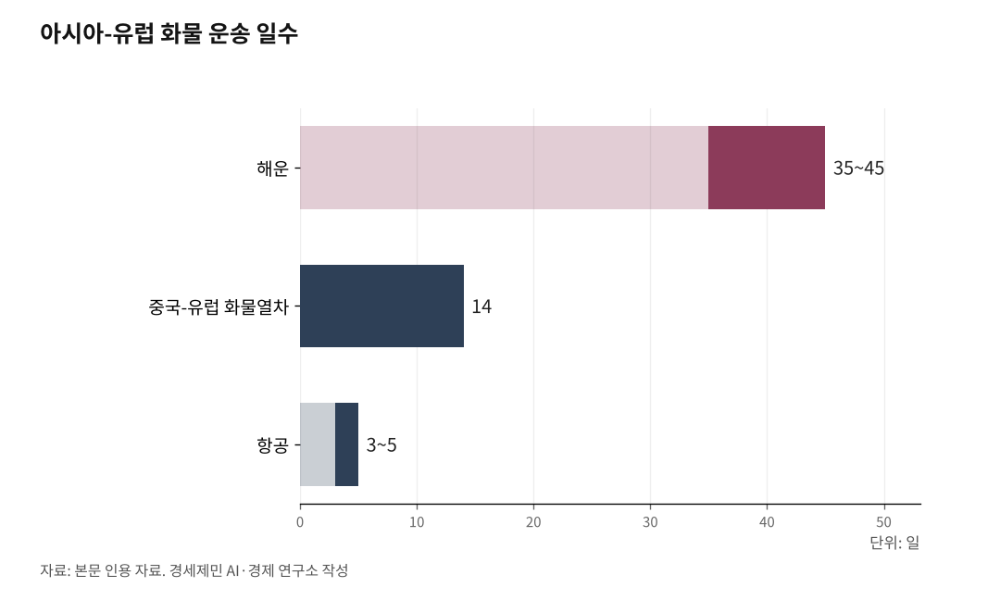

중국-유럽 화물열차 동부 통로, 올해 2000편 돌파…화물량 44.8% 급증
도시 128곳에서 출발, 유럽 26개국 도시 232곳 연결
서부 통로가 절반 이상 차지, 동부 통로 올해 44.8% 급증
러시아 우회하는 카스피해 횡단 '남통도' 부상
AI경세제민=김갑봉 기자 | 중국-유럽 화물열차(中欧班列)가 서부·중부·동부 3개 통로를 축으로 유라시아 대륙을 관통하는 물류망으로 성장했다. 중국 국내 도시 128곳에서 출발해 유럽 26개국 도시 232곳, 아시아 11개국 도시 100여곳에 도달한다.

2024년 11월 누적 운행 12만편을 돌파했고, 화물 가치는 4900억달러를 넘겼다. 해운 35~45일, 항공 3~5일 사이의 틈새를 14일 만에 연결하는 이 철도망의 3대 통로를 살펴본다.
서부 통로, 실크로드의 서쪽 축
서부 통로는 3대 통로 가운데 규모가 가장 크다. 전체 물량의 절반 이상을 차지한다.
출입구는 두 곳이다. 신장웨이우얼자치구(新疆維吾爾自治區)의 아라산커우(阿拉山口)와 훠얼궈쓰(霍爾果斯). 중국 서부에서 카자흐스탄으로 넘어가는 관문이다.
중국 국내에서는 룽하이선(隴海線, 란저우~롄윈강)과 란신선(蘭新線, 란저우~아라산커우)이 서부 통로의 간선 철도다. 중국 서남부·서북부·화중·화동 지역의 화물을 이 두 간선이 빨아들여 아라산커우와 훠얼궈쓰로 보낸다.
주요 출발 도시는 충칭(重慶), 청두(成都, 쓰촨성), 시안(西安, 산시성), 정저우(鄭州, 허난성), 우한(武漢, 후베이성), 이우(義烏, 저장성), 우루무치(烏魯木齊, 신장웨이우얼자치구) 등이다.
서부 통로를 이용하는 노선에는 대체로 '신(新)'자가 붙는다. 위신어우(渝新歐, 충칭~뒤스부르크)처럼 출발 도시 약칭+'신장'+'유럽'을 조합하는 식이다. '신'은 신장을 가리킨다.
대표 노선을 보자. 충칭~뒤스부르크는 약 1만1000km에 15일이 걸린다. 시안~바르샤바는 약 9048km에 12일, 정저우~함부르크는 약 1만245km에 15일이다. 우루무치에서 출발하면 아라산커우까지 거리가 짧아 뒤스부르크까지 10일 안팎이면 도착한다.
통상구를 나서면 카자흐스탄이다. 카자흐스탄에서 러시아 시베리아횡단철도(TSR, Trans-Siberian Railway)로 갈아타고, 벨라루스와 폴란드를 거쳐 독일 등 서유럽에 도달한다.
2025년 1~11월 기준 신장 두 통상구를 경유한 화물열차는 1만6000편으로 전년 동기 대비 7.6% 증가했다. 취급 화물은 200여종에 이른다. '스마트 철도 통상구' 시스템을 도입해 "도착 당일 통관, 24시간 이내 처리"를 표방하고 있으며, 열차 회전율이 20% 이상 향상됐다.

중부 통로, 몽골·러시아를 관통하는 북부 축
중부 통로의 출입구는 단 하나다. 네이멍구자치구(內蒙古自治區)의 얼롄하오터(二連浩特). 중국과 몽골 사이 최대 육로 통상구다.
중국 국내 간선은 징광선(京廣線, 베이징~광저우), 징바오선(京包線, 베이징~바오터우), 지얼선(集二線, 지닝~얼롄하오터)이다. 화북과 화중 지역의 화물이 이 간선을 타고 얼롄하오터로 모인다.
주요 출발 도시는 정저우(鄭州, 허난성), 청두(成都, 쓰촨성), 창사(長沙, 후난성), 우한(武漢, 후베이성) 등이다. 중부 통로 노선에는 '롄(連)'자가 붙기도 한다. 정롄어우(鄭連歐, 정저우~유럽)처럼 얼롄하오터 경유를 뜻한다.
얼롄하오터를 나서면 몽골이다. 몽골을 종단한 뒤 러시아 시베리아횡단철도에 합류하고, 같은 경로로 유럽에 도달한다. 서부 통로가 카자흐스탄을 경유하는 반면, 중부 통로는 몽골을 경유한다는 점이 다르다.
운행 규모는 빠르게 커지고 있다. 2025년 기준 중부 통로 통행량은 연간 3500편을 돌파했다. 연간 운행 편수가 3년 연속 3000편을 넘겼고, 누적 통행량은 2만1000편을 초과했다.
노선 73~74개가 독일·폴란드 등 10여개국 물류 거점 70여곳과 중국 내 성·시 24곳(도시 140여곳)을 연결한다. 취급 품목은 완성차·부품, 전기기계·설비, 가구, 건축자재 등 1만여종이다. 이 가운데 자동차·기계·전자·전기제품 등 고부가가치 화물이 40% 이상을 차지한다.
동부 통로, 시베리아횡단철도와 만나는 북동 축
동부 통로의 출입구는 세 곳이다. 만저우리(滿洲里, 네이멍구자치구), 쑤이펀허(綏芬河, 헤이룽장성), 퉁장북(同江北, 헤이룽장성). 세 통상구 모두 카자흐스탄이나 몽골을 거치지 않고 러시아 시베리아횡단철도에 바로 접속한다.
중국 국내 간선은 징후선(京滬線, 베이징~상하이), 징하선(京哈線, 베이징~하얼빈), 빈저우선(濱洲線, 하얼빈~만저우리)이다. 동북·화동·화남 지역의 화물이 이 간선을 타고 세 통상구로 흘러든다.
주요 출발 도시는 하얼빈(哈爾濱, 헤이룽장성), 선양(瀋陽, 랴오닝성), 창춘(長春, 지린성), 다롄(大連, 랴오닝성), 쑤저우(蘇州, 장쑤성), 칭다오(青島, 산둥성), 광저우(廣州, 광둥성) 등이다. 동부 통로 노선에는 '만(滿)'자가 자주 붙는다. 하만어우(哈滿歐, 하얼빈~함부르크)처럼 만저우리 경유를 뜻한다.
대표 노선을 보자. 하얼빈~함부르크는 약 9820km로 만저우리를 거쳐 시베리아횡단철도를 타고 서진한다. 쑤저우~바르샤바는 약 1만1200km에 15일, 광저우~모스크바는 약 1만1500km에 15일이 걸린다.
세 통상구 가운데 퉁장북은 가장 최근에 개통됐다. 퉁장북을 경유하면 쑤이펀허 경유 대비 운송거리가 809km 단축된다. 국경을 건너면 곧바로 시베리아횡단철도 본선에 합류하기 때문이다.
2026년 4월 14일 기준 동부 통로 통행량은 올해 들어 2000편을 돌파했다. 화물 발송량은 20만804TEU(Twenty-foot Equivalent Unit, 20피트 컨테이너 환산 단위)로 전년 동기 대비 44.8% 증가했다. 노선 27개가 폴란드·독일·네덜란드 등 14개국과 중국 도시 60여곳을 연결하고 있다.
동부 통로의 거점은 선양이다. 동북 지역 유일의 국가급 중국-유럽 화물열차 집결센터를 보유하고 있다. 만저우리·쑤이펀허·퉁장북(동부), 얼롄하오터(중부), 아라산커우·훠얼궈쓰(서부) 등 통상구 6곳 전부에 접근할 수 있는 '3통도 6통상구' 전면 커버 체계를 갖췄다.
다롄항·잉커우항과 해철(海鐵, 해상운송과 철도를 연결하는 복합운송) 연계도 활발하다. 2024년 1~11월 선양 집결센터 개행 수량은 전년 동기 대비 18.1% 증가해 동북 지역 1위를 기록했다.
3대 통로의 교차점, 환승과 집결의 거점들
3대 통로는 중국 국내에서는 각기 다른 간선 철도를 타지만, 국경 밖에서 만나는 지점이 있다. 궤간(軌間, 레일 사이 간격) 차이 때문에 반드시 환적(換積, 화물을 다른 열차로 옮겨 싣는 작업)을 거쳐야 하는 지점이기도 하다.
첫 번째 환적 지점은 카자흐스탄 국경이다. 서부 통로가 아라산커우나 훠얼궈쓰를 거쳐 카자흐스탄에 진입하면, 국경 환적역 도스틱(Dostyk)과 알타콜(Altynkol)에서 중국 표준궤(1435mm, 중국과 유럽 공통 규격)를 광궤(1520mm, 러시아·중앙아시아권 규격)로 바꿔 싣는다.
두 번째 환적 지점은 유럽 진입부다. 벨라루스~폴란드 국경 환적역인 브레스트(Brest)와 마와셰비체(Małaszewicze)가 마주 보고 있다. 광궤에서 유럽 표준궤로 다시 바꿔 싣는 곳이다. 3대 통로 모두 유럽으로 들어가려면 이 관문을 거쳐야 한다.
동부 통로는 사정이 조금 다르다. 만저우리에서 러시아에 진입하면 바로 광궤 시베리아횡단철도에 올라탄다. 카자흐스탄을 거치지 않는다. 환적은 만저우리(중국→러시아)와 브레스트/마와셰비체(러시아→유럽)에서 두 번 일어난다.
중국 국내에는 집결센터 5곳이 있다. 시안, 충칭, 청두, 정저우, 우루무치다. 각지에서 소량으로 모인 화물이 이 집결센터에서 편성돼 출발한다. 스마트 예약 체계를 도입한 결과 종합 물류 비용이 약 20% 절감됐다는 평가가 나온다.
남통도의 부상, 러시아를 우회하는 카스피해 횡단 루트
기존 3대 통로는 공통점이 하나 있다. 모두 러시아를 경유한다는 점이다. 서부 통로는 카자흐스탄에서 러시아로 올라가고, 중부 통로는 몽골에서 러시아로 들어가며, 동부 통로는 만저우리에서 러시아에 직접 진입한다.
이 구조에 균열이 생겼다. 러시아가 2024년 10월부터 군민양용 물자의 우크라이나 유입 방지를 이유로 자국을 경유하는 중국-유럽 화물열차 화물에 대규모 검사와 억류를 시작했다. 일부 화물은 3개월 이상 러시아에 묶였다.
중국은 빠르게 대응했다. 카스피해 횡단 국제운송회랑, 이른바 '중간회랑(Middle Corridor)'을 남통도(南通道)로 격상시켰다.
경로는 이렇다. 훠얼궈쓰에서 출경해 카자흐스탄을 횡단한 뒤, 카스피해 연안 항구 악타우(Aktau)에서 카스피해를 페리로 건넌다. 아제르바이잔 수도 바쿠(Baku)에 도착하면 다시 철도를 타고 조지아를 거쳐 터키 철도나 흑해 해철 연계로 유럽에 도달한다. 러시아를 한 번도 밟지 않는 루트다.
2024년 7월 시안~바쿠 구간이 '매일 1편' 상시화 운행을 시작했다. 전체 운송시간은 초기 20~25일에서 12일 안팎으로 단축됐다. 아제르바이잔 철도회사 내용을 보면 2024년 중간회랑 경유 중국발 화물 운송량은 전년 대비 25배 이상 증가해 컨테이너 2만7000여개에 이르렀다.
남통도는 기존 3대 통로 체계 바깥에서 부상한 제4의 경로다. '철도-해상-철도' 복합운송 방식이라는 점에서 순수 육상 철도인 기존 3대 통로와 성격이 다르다. 러시아 경유 리스크가 지속되는 한, 남통도의 비중은 계속 커질 전망이다.
한국은 어디에 있나
출발 도시 128곳. 도착 도시 232곳. 아시아 도시 100여곳. 이 거대한 철도망에 한국은 없다.
중국-유럽 화물열차 3대 통로는 한국과 지리적으로 가깝다. 동부 통로의 출발 도시인 다롄은 인천에서 서해를 사이에 두고 마주 보고 있다. 칭다오는 인천과 카페리로 연결돼 있다. 선양 집결센터는 다롄항·잉커우항과 해철 연계를 하고 있다.
그러나 한국은 군사분계선으로 대륙과 단절돼 있다. 14일이면 유럽에 닿는 철도망이 바로 옆에 있지만, 접속할 방법이 없다.
중동 사태가 이 문제를 더 긴박하게 만들고 있다. 예멘 후티 반군의 홍해 상선 공격으로 수에즈 운하 경유 해운이 불안정해지면서, 한국발 유럽행 화물의 해운 소요시간은 홍해 우회 시 57~63일까지 늘어났다. 대안 경로가 절실한 상황이다.
방법이 아예 없는 것은 아니다. 인천항에서 컨테이너를 배에 실어 중국 동부 연안 항만(칭다오, 롄윈강, 다롄 등)까지 운송한 뒤, 그곳에서 철도로 환적해 3대 통로에 올려보내는 해철 연계 방식이 있다. 화물열차 자체를 배에 싣고 서해를 건너는 열차페리(Train Ferry) 방식도 나오고 있다.
어느 방식이든 핵심은 같다. 서해를 건너 중국 동부 연안의 철도망에 접속하면, 한국도 3대 통로의 14일 유럽행 루트를 쓸 수 있다. 이 구상의 구체적인 그림은 다음 시리즈 "환황해 철도망의 현실과 미래"에서 본격적으로 다룬다.
※ 이 기사는 AI 프로그램 클로드를 활용해 작성했습니다.
참고문헌
· "中欧班列'东通道'今年通行量突破2000列(중국-유럽 화물열차 동부 통로 올해 통행량 2000편 돌파)", 신화통신, 2026.4.15.
· "中欧班列'东通道'2026年通行量突破1000列(중국-유럽 화물열차 동부 통로 2026년 통행량 1000편 돌파)", 헤이룽장성 인민정부, 2026.2.26.
· "三个关键词读懂中欧班列新变化(3개 키워드로 읽는 중국-유럽 화물열차 변화)", 인민일보, 2025.12.1.
· "中欧班列稳定畅通 助力更高水平对外开放(중국-유럽 화물열차, 고수준 대외개방 지원)", 국가철도국, 2024.11.27.
· "新疆铁路口岸今年通行中欧班列16000列(신장 철도 통상구 올해 중국-유럽 화물열차 1만6000편 통행)", 신화통신 한국어판, 2025.12.9.
· "二连浩特口岸中欧班列通行量增长16.7%(얼롄하오터 통상구 중국-유럽 화물열차 통행량 16.7% 증가)", 중국국제방송(CRI) 한국어판, 2025.8.3.
· "中欧班列南通道适时而动(중국-유럽 화물열차 남통도의 부상)", 중국경영보, 2025.3.22.
· "中欧班列(沈阳)开行数量同比增长18.1%(중국-유럽 화물열차 선양 개행 수량 18.1% 증가)", 선양시 인민정부, 2025.1.12.
· "中欧班列(武汉)跨里海国际运输走廊首发(중국-유럽 화물열차 우한 카스피해 횡단 첫 운행)", 우한시 인민정부, 2025.5.25.
· "中欧班列建设发展规划(2016-2020)(중국-유럽 화물열차 건설발전규획)", 국가발전개혁위원회·중국국가철로그룹, 2016.
· "'디지털 커우안' 스마트 시스템 도입 효과", 인민일보 한국어판, 2026.2.27.
· "中欧班列(중국-유럽 화물열차)", 중국일대일로망(一帶一路網).
· "환황해권 국제철도망 구축의 정책적 타당성 연구", 경세제민 AI·경제 연구소, 2025.
사진 출처
· [대표사진] Vasiljev Sergei, "EP2K-310, 514, 515 with freight train.jpg", 위키미디어 공용, CC0, https://commons.wikimedia.org/wiki/File:EP2K-310,_514,_515_with_freight_train.jpg
※ 이 기사는 인공지능을 활용해 작성했습니다.
관련기사
- 한국 대륙 철도 다섯 통로, 북한 못 지나면 무용지물
- 中, 국내 6만km 고속철도망·국외 대륙철도 13만편 동시 확대
- [중국철도⑫] 철도 연결 항만 90%, 컨테이너 철도 몫 중국 3.8% 한국 2.2%
- [중국철도⑪] 중국·키르기스·우즈베크 철도, 착공 2년에 공정률 목표 5%
저작권자 © AI경세제민 무단전재 및 재배포, AI학습 및 활용 금지